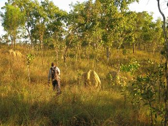
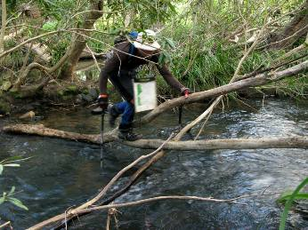
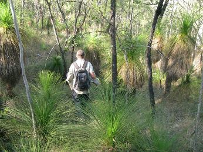

First Australasian Rogaine Championships 2013
near Cairns, Far North Queensland
22nd & 23rd June 2013
Phil Wood & Rob Jarvis
(1st Overall, 1st MO, 1st MV)
The opportunity to escape South Island winter temperatures to tropical North Queensland was a major drawcard in our decision to compete in the ARC near Cairns in late June. The other attractions were competing in the inaugural Australasian Champs in the country that invented the sport – and the terrain sounded interesting too.
 | |
| Overall Winners, Phil & Rob |
Rob Jarvis and I had only teamed up once before (at the Heights of Winter event in 2011) so decided to enter HOW 2013 together as a tune-up race 2 weeks before the ARC, to iron out any kinks! Although we finished 3rd at the 10hr HOW, we were very lucky to pip the 2nd Vet mens team and the 1st mixed team who were close behind us in 4th and 5th, and we were well beaten by 1st and 2nd.
We arrived in Cairns on the Monday prior to the event to clear skies and 26 degrees – in stark contrast to the flooding we’d left in Christchurch. While ‘Far North Queensland’ is tropical, winter is their dry season so we were treated to mostly clear skies and temperatures in the mid to high twenties for our stay.
Rob and I headed up the coast over the next couple of days, went snorkelling on the Great Barrier Reef, walked up Mt Sorrow (named by Captain Cook), visited a coffee plantation, etc etc. And got used to the heat.
The event was on the Atherton Tableland about 40 minutes drive from Cairns in ‘mainly open’ Eucalypt forest with contours ranging from about 400-850m above sea level. The major streams had narrow bands of thick rain forest vegetation alongside them and the Kennedy Highway ran North-South through the middle of the map. We had also been told that as well as the event centre Hash House serving food, there would be 2 All Night Cafes in the field. The map was 1:33,333 (3cm=1km) with 10m contours on waterproof paper. We’d have about 6hr before dark, about 12.5hr of night, then 5.5hr of daylight to finish.
At registration on the Friday afternoon we caught up with a few of the Kiwi contingent and were warned again of the presence of Spear Grass – a normal looking grass with aggressive barb shaped seed heads that once in your socks had a habit of getting under your skin! Fully protective gaiters were recommended or duct taping shoes and ankles as an alternative.
As with most 24hr Rogaines maps were handed out at 9am to allow 3hr planning time. Our first impressions were: the map was mainly contours with very few tracks to follow. East of the Highway was steeper and west was more rolling. There were no water stations (other than the ANC’s and Hash House).
 | |
| Slow long grass & termite mounds |
Rob and I decided we liked the rolling western side to start with and wanted to use the few tracks in that section to help us in the night. Without having experience in the terrain it’s hard to accurately predict how far we could cover in 24hr but decided that we would aim for 100km. We would need to closely monitor our progress early on to either shorten or lengthen our route accordingly. Rob picked a great route through 37/46 of the western controls (2390/2700 points) and we made a plan for the eastern side that we knew would need modifying based on time remaining.
Our first impression after the start was how slow the terrain was due to the long grass so we were mindful of the need to shorten our course from very early on. It was also very warm to be racing and I was drinking more than usual. We’d started with about 9kg packs that had 4 litres of fluid and about 20hrs of food because we were counting on the ANC for a big meal.
After 4hr of hot activity my drink bladder was almost dry and we decided to make a slight detour to a rain forested creek in the hope of finding water. Unfortunately it was bone dry, so we redesigned our course to visit the ANC much earlier. We also considered streamlining our overall course given the slower than expected progress but decided there was no better alternative and that we’d rather cover less ground on the eastern side.
We arrived at the ANC at 6pm just as they were opening for business. I gulped down about a litre of sports drink, filled my drink bladder and bottle and had some dinner. We also got torches out here. It’s often said that Rogaines (and adventure races) are won at night – we weren’t thinking this at the time, but were very keen to minimise errors in the dark as they are much more costly. A lot of our routes between controls were very conservative i.e. following ridges/tracks/streams where available, basically reducing risk especially as this was unfamiliar terrain for us.
 | |
| Aussies don't like wet feet |
Our first 3 controls in the dark went well but then we missed a track which was really only a fenceline. After thrashing around for about 15 minutes our only option was to return to the fence and pray it was the marked track – luckily it was. Then 2 controls later we read our way carefully into the circle: no flag. Up and down the stream system wasting another 10-15 mins before giving up certain we were in the right place. We found out at the finish that some pig hunters had nicked the flag and the cops had tracked them down!
Our second 6 hrs were dominated by uncomfortable feet and ankles from the speargrass, as we’d chosen to run without gaiters or duct tape. When we crossed paths at 2:30am with Richard Mountstephens and Jono O’Loughlin (whom we considered one of the race favourites) going the opposite way, it was a relief to hear that they had been untroubled by the grass, and that we might soon see the last of it.
The rest of the night went relatively smoothly and we sat down at dawn to plan our last 5.5 hrs on the other side of the highway. It was less than half of our original plan but if it went well we hoped we might have the opportunity to get an extra control or two. The first thing that struck us was how fast the forest was on the eastern side and we wondered if we’d picked the best side of the map to go to first. We were to find out later that a fire had burnt through the forest on the eastern side of the highway a couple of years ago, leaving the mature trees but removing the long grass.
 | |
| Fancy Vegetation |
Things were going smoothly until we somehow lost contact with the map mid way between 2 controls and by the time we’d relocated we were 70m higher and half a km away from the 40 pointer we were aiming for, and running out of time to get back. We didn’t want to jeopardise the 100, 50, 70, and 50 on the way home so we wrote it off and carried on. But as it turned out we had time to add another 40 pointer as well so we needn’t have been so worried. The big adrenaline moment came on the way to our 4th to last control, running down a wide flat ridge. I kicked what I thought was a soft stick and as I turned to look back a large grey snake slithered off before Rob had the chance to do the same. And we had a final bit of excitement when the last control took longer to get to and the route back to the finish was a little unclear, but we made it with 54 seconds to spare!
We finished very satisfied that despite a couple of ‘wobbles’ we’d done our best in unfamiliar terrain and hoped our score would be good enough for top 3. As well as Richard and Jono, we knew Julie Quinn and David Baldwin would be very competitive as they’d won overall in 2009 and 2011.
After a couple of hours we were all put out of our misery and the trophies were handed out. At 4kg of mostly Jarrah timber they appeared to be designed as a disincentive to anyone travelling by air! Fortunately I own a few power tools …………………………
Our key factors:
- Team mates with complementary skills
- Experience gained on many orienteering trips to Australia – specifically in ‘Gully Spur’ terrain
- A good build up including Highland Events Timburn Rogaine, TWALK, and HOW
- The importance of tramping as training
- Being adaptable (i.e. prepared to change route)
- Never giving up, even after problems
- Foot prep (taking Nathan Fa’avae’s advice re barrier cream on soles of feet)
- Nav prep – know your approx distance. We ended up doing 90km.
- Arriving early in Cairns to get used to heat
Phil Wood
16th July 2013
New Zealand Placings
The contingent of 16 NZ Rogainers performed with distinction at these Australasian Championships. The complete list of NZ placings is:
| Phil Wood, Rob Jarvis | 3140pts, 1st overall, 1st MO, 1st MV | |
| Viv Prince with Richard Robinson (Australia) | 2720pts, 6th overall, 1st XSV, 2nd XV, 3rd XO | |
| Emma and Guy de Lacey | 2250pts, 19th overall, 2nd XSV, 3rd XV | |
| Mark Struthers, Annette Windross, Dennis Litt and Henry Beex | 1880pts, 27th overall | |
| Trevor Merrifield, Andrew McGowan | 1710pts, 34th overall | |
| Pete Squires, Anne Kennedy, Bill Kennedy | 1590pts, 37th overall - 1st, by default, in the XUV (65+) category introduced this year. No other UV teams fronted. | |
| Annie Sanderson, Nick Collins | 1320pts, 45th overall |
There were 68 teams in the event.